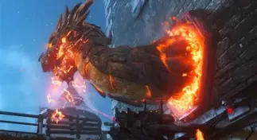
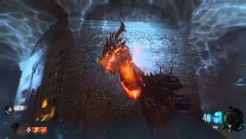

Welcome, in these pages Above is how to complete The Main EE in Call of Duty 3 Zombies Der Eisendrache SOLO steps. These pages show the main EE steps and show some images to show what you should be looking for and ill have directions on what and how to do it.